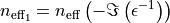
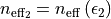

hyperspy._signals.dielectric_function module¶
-
class
hyperspy._signals.dielectric_function.DielectricFunction(*args, **kwargs)¶ Bases:
hyperspy._signals.dielectric_function.DielectricFunction_mixin,hyperspy._signals.complex_signal1d.ComplexSignal1D
-
class
hyperspy._signals.dielectric_function.DielectricFunction_mixin¶ Bases:
object-
get_electron_energy_loss_spectrum(zlp, t)¶
-
get_number_of_effective_electrons(nat, cumulative=False)¶ Compute the number of effective electrons using the Bethe f-sum rule.
The Bethe f-sum rule gives rise to two definitions of the effective number (see [Egerton2011]), neff1 and neff2:

and:

This method computes and return both.
- Parameters
nat (float) – Number of atoms (or molecules) per unit volume of the sample.
cumulative (bool) – If False calculate the number of effective electrons up to the higher energy-loss of the spectrum. If True, calculate the number of effective electrons as a function of the energy-loss up to the higher energy-loss of the spectrum. True is only supported by SciPy newer than 0.13.2.
- Returns
neff1, neff2 – Signal1D instances containing neff1 and neff2. The signal and navigation dimensions are the same as the current signal if cumulative is True, otherwise the signal dimension is 0 and the navigation dimension is the same as the current signal.
- Return type
Notes
- Egerton2011
Ray Egerton, “Electron Energy-Loss
Spectroscopy in the Electron Microscope”, Springer-Verlag, 2011.
-
-
class
hyperspy._signals.dielectric_function.LazyDielectricFunction(*args, **kwargs)¶ Bases:
hyperspy._signals.dielectric_function.DielectricFunction,hyperspy._signals.complex_signal1d.LazyComplexSignal1D